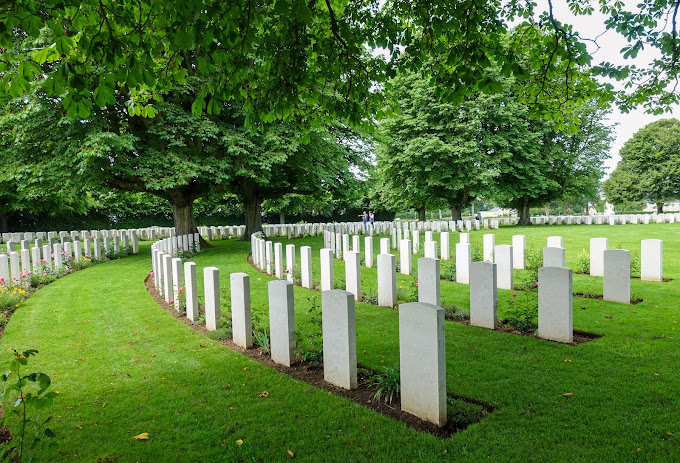
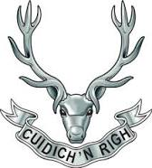

GRAY - Commemorative Plaque found for Peter Chisholm, 1882-1918

Peter Chisholm, a sergeant in the Seaforth Highlanders, was in a line infantry regiment of the British Army, mainly associated with large areas of the northern Highlands of Scotland. The regiment existed from 1881 to 1961 and saw service in World War I and World War II, along with many smaller conflicts. Peter was in the “first” battalion and died in the Great War. Sadly on 22 July 1918, near the end of the war, Peter died of wounds. He is buried in a France and Flanders.
By the 4th August 1914 Britain and much of Europe were pulled into a war which would last 1,566 days, cost 8,528,831 lives and 28,938,073 casualties. Peter’s unit would have been involved in all of the following battles below: 1st Battalion (Forces War Records)
By the 4th August 1914 Britain and much of Europe were pulled into a war which would last 1,566 days, cost 8,528,831 lives and 28,938,073 casualties. Peter’s unit would have been involved in all of the following battles below: 1st Battalion (Forces War Records)
These plaques or medals were individually cast in bronze. Most were issued to men, and their legend (inscription reads, “HE DIED FOR FREEDOM AND HONOUR”. The medal was designed by Mr. E. Carter Preston of Liverpool, England.
James passed away in 2020 and his family found the medal while sorting through his things. James’ sister, Margaret, was in turn, given the “Next of Kin Memorial Scroll” by her mother, also featured in this article.

Seaforth Highlanders Military Unit Crest Founded 1881 Motto: Motto(s): Cuidich 'n Righ (Aid the King), Part of: Highland Brigade Colonel of the Regiment: Edward, Prince of Wales (1920–36).

Memorial Death Plaque of WWI Edward Carter Preston Next of Kin Memorial Scroll Seaforth Highlanders Military Unit